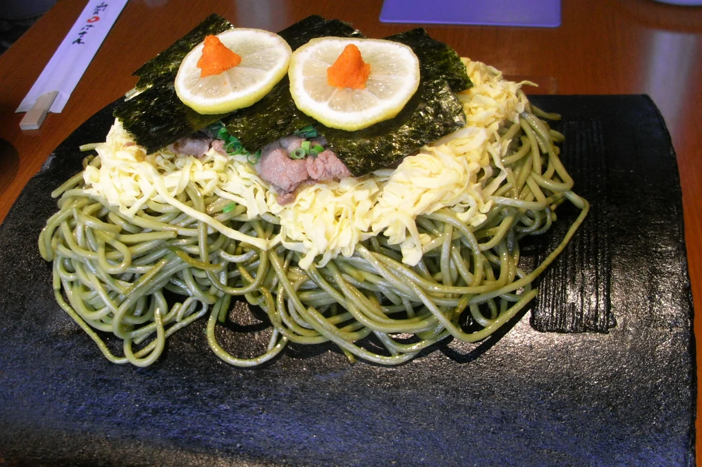
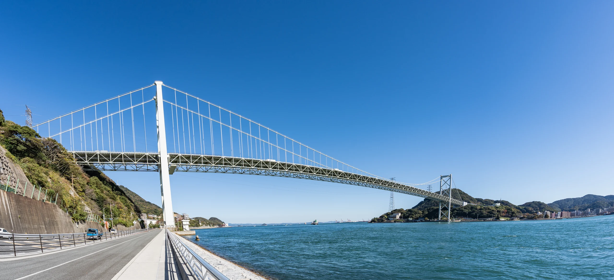
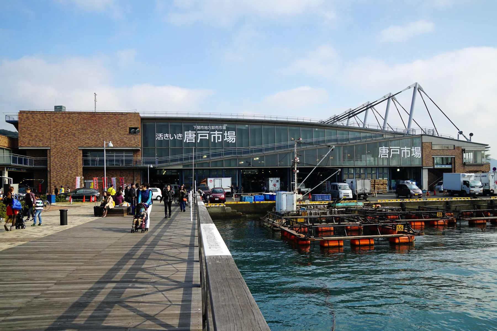
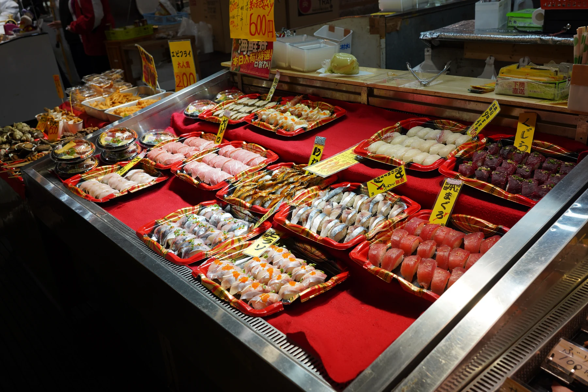
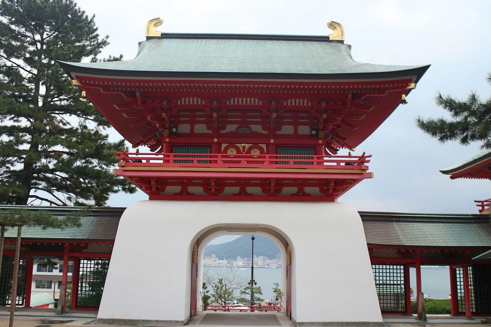
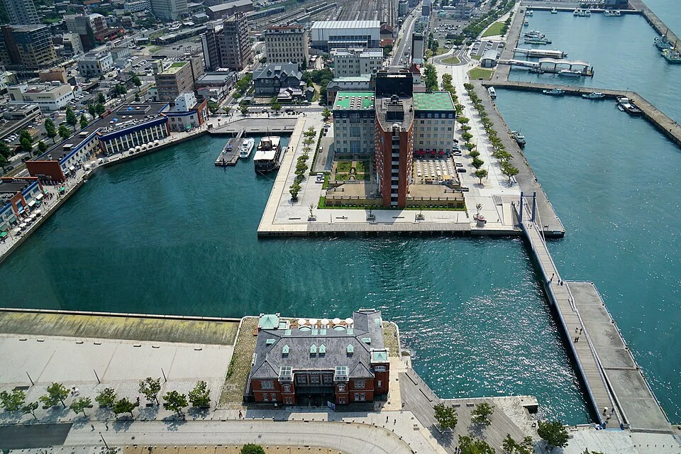

01 — SHIMONOSEKI FOOD MARKETこの一口に、
この一口に、
会いに来る。
瓦そば、ふぐ、地元の鮮魚。
食べて、つくり手に出会い、お土産を選ぶ。
下関の「おいしい」を、旅の目的に。
目指すのは、地元の名店とつくる限定メニューや体験。その店に会いに来たくなる、食の拠点。


大丸下関店の営業終了後を見据えた
関門広域の滞在拠点をつくる提案
これは、未来の可能性を考える提案です。 大丸・シーモール・下関市などの公式計画ではありません。事業化、出店、連携、運行、開業日は未決定です。
駅も、バスも、駐車場も。
買い物も、近くの映画館も。
すでにある資産をつなぎ直し、
人が何度も訪れたくなる場所へ。
瓦そば、ふぐ、地元の鮮魚。
食べて、つくり手に出会い、お土産を選ぶ。
下関の「おいしい」を、旅の目的に。
目指すのは、地元の名店とつくる限定メニューや体験。その店に会いに来たくなる、食の拠点。


器、文具、茶、工芸、ファッション。
日本ブランドと地域のつくり手が出会い、
ここでしか買えない一品をつくる。
展示、体験、カフェ、限定商品。
常設企画と入れ替わる企画展から、
街を巡るスタンプラリーへ。
一度車を停めたら、いくつもの用事が済む。
平日の暮らしが、施設の土台になる。
導入機能の候補。需要・設備・制度上の条件と既存施設の機能を確認して選びます。

日が沈んでから、もう一つの関門が始まる。
この夜のために、食事を予約する。
この夜のために、宿を取る。
店の営業時間を延ばすだけでなく、
関門でしか過ごせない夜をつくる。
食・文化・水辺・宿泊を、一つの旅として届ける。

地元の料理人と食材を楽しむ予約制の食体験。瓦そばのライブキッチン、地魚と地酒、つくり手の話。言葉を越えて伝わる関門の食卓へ。
小さなライブ、アート、許諾を得たIP企画、夜のカフェ。観光客と地元の人が一緒に楽しめる、入れ替わる夜のプログラム。
門司港の夜景や水辺の散歩と駅前の夜をつなぐ。夜間ガイドやクルーズは、運営者・実施条件・帰路が整う場合の検討案。
下関・門司港・小倉などの既存宿泊施設との連携を検討。宿へ戻る移動、荷物対応、翌日の食や街歩きまで、一緒に案内する。
下関駅前を入口に、関門の見どころを巡る。
帰路を確認し、予約した夜の体験へ向かう。
夕食と、そのあとに続く楽しみをつくる。
宿泊地別の帰着手段まで案内する構想。
朝食、街歩き、買い物で、滞在をもう少し。
多言語の案内、料金・開催日・取消条件、食の希望を事前に確かめられるように。
最終便と乗り継ぎを確認。最終便後はタクシー等の確保策、運行中止時の代替手段を設計。
騒音・混雑への配慮、夜間の働き方・帰宅手段・警備まで。運営費を含めた採算を確認。
すべて企画段階です。夜間運行や送迎、宿泊連携は未合意。既存の船・バス・鉄道が深夜まで運行することを示しません。飲酒する方は運転しない滞在・移動プランを前提とします。
下関・唐戸・門司港・小倉へ。
関門を広く楽しみ、夜は宿に戻れる。
その往復までを、滞在の価値にする。
本物の市場を体験する
海峡の向こうの街歩きと夜景へ
路線バスと関門連絡船を主軸に。乗り場、乗り継ぎ、帰り方をわかりやすく。
子ども連れ、車いす、大きな荷物。段差・待ち時間・休憩場所まで確かめる。
追加シャトル、オンデマンド交通、シェアサイクルは、需要・運営・費用負担から検討。
旅程、交通、夜の体験、宿泊、荷物預かり。
予約や案内をつなぐ、関門の入口へ。
構想を伝える体験例です。予約機能はありません。営業日・運航・バリアフリー対応は各公式案内で確認が必要です。


既存の商業や駐車場、近隣の映画館と、地域食・観光・体験の構想をつなぐ。施設間の動線や案内を一緒に考える。
駅前で下関を知り、唐戸で本物の市場を楽しむ。夕方には駅前へ戻る。お互いに来訪理由をつくる。
北九州や山口県西部、国内外から。30・45・60分の自動車到達圏を調べ、来訪目的と来訪頻度を検証する。
連携・役割分担はMDLの提案。自動車到達圏は未計測で、商圏人口や需要を確定したものではありません。シネマサンシャイン下関はシーモールに隣接する別棟です。
食べる人の笑顔が、つくる人の仕事になる。
旅先での消費を、地元企業への発注と継続雇用へ。
関門全体で稼ぎ、下関と北九州それぞれに還元する。
もう一泊したくなる体験
測る：宿泊転換率・泊数夕食・文化・翌朝の支出
測る：１人当たり地域消費地元の発注・所得に残す
測る：域内調達・付加価値続けて働ける仕事へ
測る：純増雇用・賃金・継続率若者が暮らし続ける選択肢
測る：若年層の就業・定着施設一つで人口動態を変えられるとは断定できません。滞在から地域所得、継続雇用へつながるかを検証し、住まい・子育て・教育など地域の施策との接続を考えます。上記は因果仮説で、実績や効果予測ではありません。
来館者数だけでなく、
地域に生まれた所得を確かめる。
地元企業や創業者には、低い固定賃料と売上歩合を組み合わせる案。運営費を賄えることを前提に、挑戦の入口をつくる。
食材だけでなく、清掃、警備、施工、企画。地域での雇用・仕入れ・取引・再投資を共通の基準で評価する。短期の人数だけでなく、継続雇用と賃金、若者が育つ機会も確認。
売上、域内調達、市内に生まれる付加価値を分けて記録。仕入先売上と給与を単純に足さず、地域に残る所得を推計する。
地域は下関市を基本単位とし、対象期間と施設・取引範囲を固定します。北九州市分と関門全体の集計を別に表示し、同じ取引を重複加算しません。地域への一次支払額（市内事業者への仕入れ等）と、市内に帰属する付加価値（雇用所得・利益等）は別の指標にします。
LOCAL MONEY RATIOの考え方：施設利用から直接・間接に生まれ、市内に帰属する付加価値の推計 ÷ 対象消費額。域外への仕入れや所得流出、取引段階間の重複を調整する必要があります。これは確立した統一指標や実測値ではなく、算定範囲・税の扱い・方法を検証するための提案です。
LOCAL IMPACT SCOREも評価設計案です。対象・配点・証憑・見直し方法を公開し、地域貢献だけで賃料を決めず、支払い能力と施設全体の採算を合わせて確認します。
所有・利用条件、設備・改修費、既存の商い、来訪需要を確認。事業の判断主体と調査の予算を決める。
利用可能な場所で、夜の食・文化企画と宿泊・帰路案内を検証。泊数・夜間消費・地元発注・運営原価を測る。
継続需要と採算、建物・交通の実施条件がそろった部分から段階整備。条件を満たさない機能は変更・縮小する。
調査開始後の進め方の案です。営業中の店舗の利用や、上記期限での開業・改修を予定するものではありません。
具体的な階・面積・配置は未定。構造、設備、避難動線、用途条件と維持管理費を確認して判断します。未使用部分の維持費も事業計画に含めます。
| 方向性 | 価値をつくる仕組み | 確認する条件 |
|---|---|---|
| 日常サービス中心 | 医療・教育・生活用途の継続需要 | 必要な機能、入居条件、既存施設との重複 |
| 観光・文化の目的地 | 食・日本ブランド・IPで域外需要を呼ぶ | 追加来訪、平日需要、IP費用・出店採算 |
| 街全体の回遊運営 | 駐車・案内・体験・宿泊の接続を通じて周辺へ送客。参加事業者の会費・手数料等を検討 | 施設外での追加消費、運営費回収、各事業者との合意 |
| 新規開発を見送る | 大規模投資を留保し、暫定利用等を検討 | 維持管理費、遊休化、駅前への影響 |
今回の構想は、日常サービスを土台に、夜の目的来訪と街全体の回遊を組み合わせる案です。上記３方向の検証結果を見て、資源の配分を決めます。
提案が崩れる条件：施設内だけの消費移転にとどまる、休日以外に利用されない、改修・維持費が収益を上回る、運営や交通の担い手が決まらない。これらを小規模な検証で確かめます。
継続・拡大の基準、損失上限、検証期間は、調査後に予算責任者が事前設定。達しなければ変更・縮小・中止を判断します。
最初の一歩は、調査を始める合意から。所有者・権利者と活用判断の主体が、調査範囲、費用、責任者を決めます。現時点で、MDLが受託・選定されていることを示すものではありません。
所有者・権利者、選定される事業主体
選定される運営者。改修・維持費と各テナントの条件を精査
既存交通・観光事業者との協議。追加運行の主体と費用負担を決定
事業主体がデータ責任者を定め、地域の声と測定結果を次の判断に反映
MDLは、移動・場・地域事業者をつなぐ企画を提案します。個別契約・許認可・権利処理・資金調達は、実施内容が具体化した段階で各責任者が確認します。
人が泊まる。地元にお金が落ちる。
仕事が続く。若者が未来を描ける。
その循環を、駅前からつくっていく。
企画・制作：株式会社モビリティデザインラボ。公開情報をもとに作成した独自の構想案です。大丸松坂屋百貨店、シーモール、下関市、掲載施設・交通事業者などの依頼・承認・協賛、採用や連携合意を示すものではありません。
大丸下関店は2027年8月31日に営業終了予定で、2026年9月13日時点では営業中です。名称は対象・周辺施設を説明するために使用しています。店舗・ブランド・IPの出店、施設改修、運行、共通券、予約サービスはいずれも提案段階で、現時点の提供サービスではありません。
写真は撮影時点の関門エリアや食文化を紹介するもので、現況の保証や新施設の完成予想図ではありません。ふぐのキャラクターは本構想向けのAI生成オリジナルイメージで、特定施設の公式キャラクターではありません。
公開・確認日：2026年9月13日 ｜ 事業性・現地調査・実証：未実施
関門海峡と関門橋 — Wei-Te Wong / Wikimedia Commons 原典 / CC BY-SA 2.0。WebP変換・一部縮小・表示枠でのトリミング。加工・表示した写真にも同じライセンスを適用。掲載写真
唐戸市場の寿司 — Rick888chen / Wikimedia Commons 原典 / CC BY-SA 4.0。WebP変換・一部縮小・表示枠でのトリミング。加工・表示した写真にも同じライセンスを適用。掲載写真
瓦そば — woinary (Yamaguchi Yoshiaki) / Wikimedia Commons 原典 / CC BY-SA 2.0。WebP変換・一部縮小・表示枠でのトリミング。加工・表示した写真にも同じライセンスを適用。掲載写真
唐戸市場 — 663highland / Wikimedia Commons 原典 / CC BY 2.5。WebP変換・一部縮小・表示枠でのトリミング。加工・表示した写真にも同じライセンスを適用。掲載写真
赤間神宮 — Suicasmo / Wikimedia Commons 原典 / CC BY-SA 4.0。WebP変換・一部縮小・表示枠でのトリミング。加工・表示した写真にも同じライセンスを適用。掲載写真
門司港レトロ — 663highland / Wikimedia Commons 原典 / CC BY 2.5。WebP変換・一部縮小・表示枠でのトリミング。加工・表示した写真にも同じライセンスを適用。掲載写真
関門海峡の夜景 — Takasunrise0921 / Wikimedia Commons 原典 / CC BY 2.5。WebP変換・一部縮小・表示枠でのトリミング。加工・表示した写真にも同じライセンスを適用。掲載写真
写真は表示枠に合わせてトリミングし、Web用に縮小・圧縮しています。各写真の権利と再利用条件は上記の個別表記に従います。サイト全体に写真のライセンスを一括適用するものではありません。
この特設ページには、問い合わせフォーム、位置情報取得、アクセス解析、Cookie・ブラウザー保存を使う機能はありません。コースの選択は画面内の表示切替のみです。配信元のGitHub Pagesはアクセス時にIPアドレス等を収集する場合があります。外部リンクを開くと、リンク先の規約・プライバシーポリシーが適用されます。
GitHub Pagesのデータ収集について{kind=link}
{kind=link}
{kind=link}
{kind=link}
{kind=link}
{kind=link}